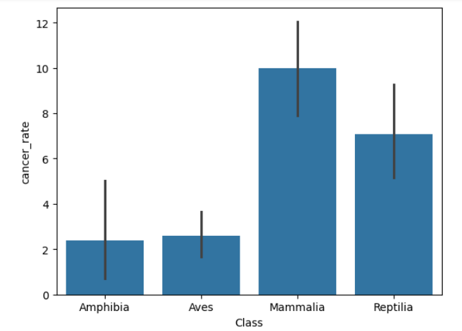
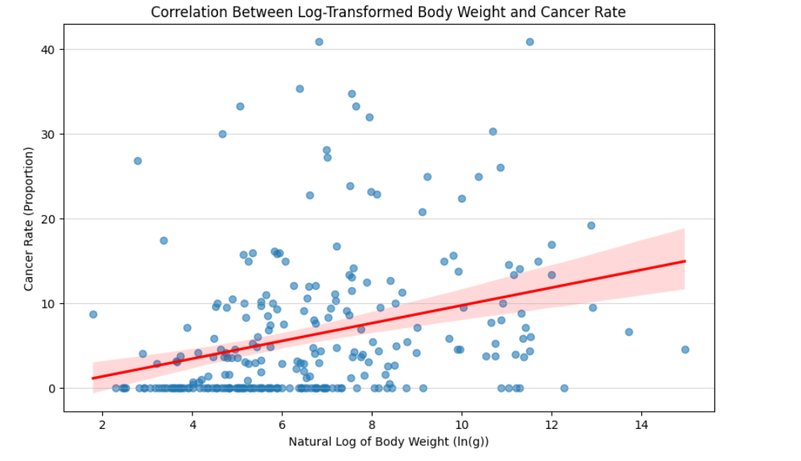
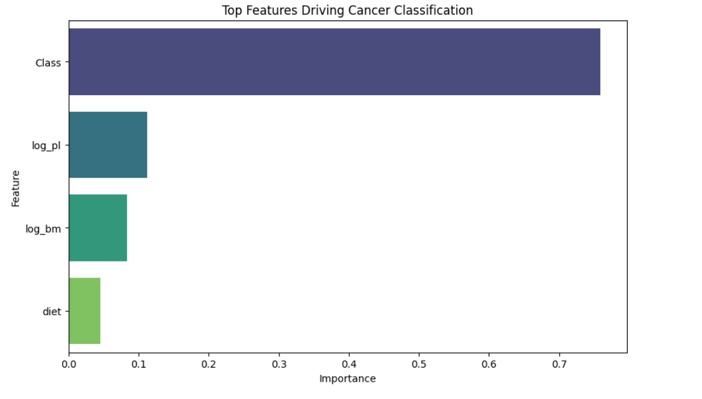

Petos Paradox - Predicting Cancer Rates in Animals
Accuracy
Animal Instances
Target Chosen
Summary
Analyzed a researchers' dataset on cancer rates across different animal species to investigate Petos Paradox. Built a multiple linear regression model to predict cancer rates based on various biological and environmental factors.
Problem
Petos Paradox refers to the observation that larger animals with more cells do not have a correspondingly higher incidence of cancer compared to smaller animals. The challenge was to analyze a dataset of various animal species to identify factors that influence cancer rates and build a predictive model.
Approach
- Data Cleaning: Handled missing values and standardized units across different species.
- Feature Engineering: Created new features such as Metabolic Rate and Lifespan. Converted categorical variables using one-hot encoding.
- Modeling: Compared multiple regression algorithms including Linear Regression and Random Forest. Tuned hyperparameters using Grid Search with cross-validation.
Results
Petos Paradox exists - sort of. Animals that are bigger actually do have higher cancer rates, but its significantly less than you would expect. The correlation is not linear but rather logarithmic.
However, it is notable that many of the animals exhibited almost no cancer rates. These animals could be prime candidates for investigating cancer suppression mechanisms.
Analysis Visualizations
- Animal Class: Certain classes of animals (like mammals) tended to have higher cancer rates compared to others (like reptiles and birds). This suggests that biological differences between classes may play a role in cancer susceptibility.

- Cancer Rates by body size: While larger animals did tend to have higher cancer rates, the relationship was not as strong as one might expect based purely on cell count. This supports the idea that larger animals may have evolved more effective cancer suppression mechanisms.

- Predictors of Cancer Rates: Class was by and car the strongest predictor of cancer rates. However, other factors like lifespan and metabolic rate also showed some correlation with cancer incidence, suggesting a multifactorial basis for cancer susceptibility across species. One interesting note is logpl which essentially measures the amount of genetic mutations an animal accumulates over its lifetime. This had a positive correlation with cancer rates which makes sense as more mutations generally lead to higher cancer risk.
